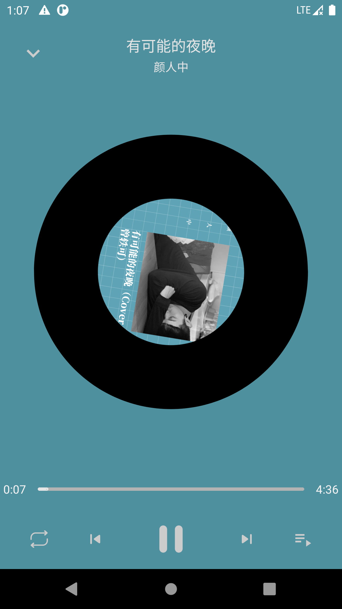

想自己写一个也有一大因素是Github上的高仿基本没看到使用Exoplayer来实现
UI已经有一页了，优先实现的就是播放功能
播放功能包含播放器和播放UI，具体实现结构如下：
播放器 先添加播放需要的依赖库
1 2 3 4 5 implementation "androidx.media:media:1.3.1" api "com.google.android.exoplayer:exoplayer-core:$exoplayer_version " api "com.google.android.exoplayer:exoplayer-ui:$exoplayer_version " api "com.google.android.exoplayer:extension-mediasession:$exoplayer_version " api "com.google.android.exoplayer:extension-cast:$exoplayer_version "
实现是迁移了uamp 的代码，将JsonSource.kt替换成了NeteaseSource.kt，其他和原生一模一样
1 2 3 4 5 6 7 8 9 10 11 12 13 14 15 16 17 18 . ├── extensions │ ├── FileExt.kt │ ├── JavaLangExt.kt │ ├── MediaMetadataCompatExt.kt │ └── PlaybackStateCompatExt.kt ├── library │ ├── AlbumArtContentProvider.kt │ ├── BrowseTree.kt │ ├── JsonSource.kt │ ├── MusicSource.kt │ └── NeteaseSource.kt ├── MediaItemData.kt ├── MusicServiceConnection.kt ├── MusicService.kt ├── PackageValidator.kt ├── PersistentStorage.kt └── UampNotificationManager.kt
播放器的添加整个工程的骨架感觉就支棱起来，可以愉快的添加想要的功能了
播放UI 播放页的时候有一个小播放器和一个全屏播放页，小的播放器是一个普通的UI，嵌入在Activity中，全屏播放页是用BottomSheetDialogFragment实现的
小播放器 小的播放器布局比较容易布局，需要注意的是将LinearLayout替换ConstraintLayout布局，因为要专辑图标的android:clipChildren="false"扩展绘制在ConstraintLayout上是失效
1 2 3 4 5 6 7 8 9 10 11 12 13 14 15 16 17 18 19 20 21 22 23 24 25 26 27 28 29 30 31 32 33 34 35 36 37 38 39 40 41 42 43 44 45 46 47 48 49 50 51 52 53 54 55 56 57 <LinearLayout xmlns:android ="http://schemas.android.com/apk/res/android" xmlns:app ="http://schemas.android.com/apk/res-auto" xmlns:tools ="http://schemas.android.com/tools" android:layout_width ="match_parent" android:layout_height ="48dp" android:background ="@color/white" android:gravity ="center_vertical" android:orientation ="horizontal" > <com.google.android.material.imageview.ShapeableImageView android:id ="@+id/albumArt" android:layout_width ="64dp" android:layout_height ="64dp" android:layout_gravity ="bottom" android:layout_marginStart ="16dp" android:layout_marginEnd ="16dp" android:scaleType ="centerCrop" app:shapeAppearanceOverlay ="@style/circleStyle" tools:src ="@mipmap/ic_netease" /> <androidx.appcompat.widget.AppCompatTextView android:id ="@+id/tvTitle" android:layout_width ="wrap_content" android:layout_height ="wrap_content" android:layout_margin ="8dp" android:maxWidth ="160dp" android:maxLines ="1" android:textColor ="@color/white30" android:textSize ="22sp" tools:text ="晚风" /> <androidx.appcompat.widget.AppCompatTextView android:id ="@+id/tvSinger" android:layout_width ="0dp" android:layout_height ="wrap_content" android:layout_margin ="8dp" android:layout_weight ="1" android:ellipsize ="end" android:maxLines ="1" android:textColor ="@color/white30" tools:text ="- 陈婧霏" /> <androidx.appcompat.widget.AppCompatImageView android:id ="@+id/ivPlayPause" android:layout_width ="wrap_content" android:layout_height ="wrap_content" android:padding ="8dp" android:src ="@drawable/ic_play_arrow_black_24dp" /> <androidx.appcompat.widget.AppCompatImageView android:id ="@+id/ivPlayList" android:layout_width ="wrap_content" android:layout_height ="wrap_content" android:padding ="8dp" android:src ="@drawable/ic_playlist_play_black_24" /> </LinearLayout >
全屏播放页 
全屏页的布局略过，添加的点是UI滑下来时，后面模糊背景去掉，修正为透明
1 2 3 4 5 6 7 8 9 10 11 12 13 <style name ="TransBottomSheetDialogStyle" parent ="Theme.Design.Light.BottomSheetDialog" > <item name ="android:windowFrame" > @null</item > <item name ="android:windowIsFloating" > true</item > <item name ="android:windowIsTranslucent" > true</item > <item name ="android:background" > @android:color/transparent</item > <item name ="android:backgroundDimEnabled" > false</item > <item name ="bottomSheetStyle" > @style/TransBottomSheetStyle</item > </style > <style name ="TransBottomSheetStyle" parent ="Widget.Design.BottomSheet.Modal" > <item name ="android:background" > @android:color/transparent</item > </style >
1 2 3 4 override fun onCreate (savedInstanceState: Bundle ?) super .onCreate(savedInstanceState) setStyle(STYLE_NORMAL, R.style.TransBottomSheetDialogStyle) }
BottomSheetDialogFragment固定高度
参考 https://www.jianshu.com/p/7fcec871ea36 https://www.jianshu.com/p/c339dd2e9ef8 https://www.jianshu.com/p/e460d4b47dd4 https://github.com/android/uamp